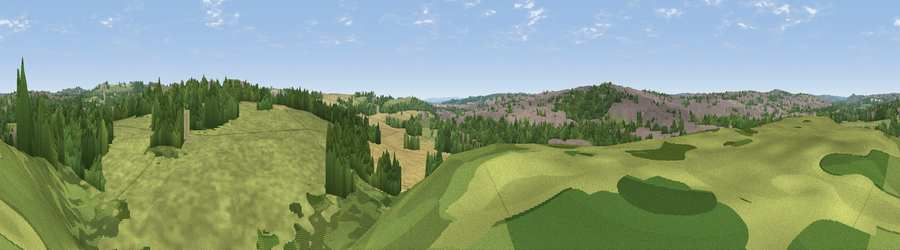

Viewpoint near Cossall
#36751 in England · top 65% of its area beats it · near Cossall · path 61 mWhere it is
The exact computed spot (SK 47725 42325). Click the marker for map links.
Public access: the nearest public right of way is about 61 m away — the final stretch may cross private land. Computed from Natural England's CRoW access layer and OpenStreetMap rights of way — not the legal definitive map. Always verify locally.
The view, rendered

A 360° render of this exact spot computed from the terrain model, tree cover and land cover — summer colours, afternoon light, calibrated against photographs of famous viewpoints. Real trees, hedges and buildings will differ in detail.
The panorama
Grey silhouette: terrain skyline in each direction (720 bearings, Earth curvature and refraction included). Dashed green: skyline with trees (+15 m) and buildings (+8 m) as obstacles. Blue strip: how far the ground is visible on each bearing.
Where the view opens
Wedge length = distance to the farthest visible ground on that bearing (vegetation-aware). Rings at 10, 25 and 50 km.
What fills the view
38% grassland · 31% woodland · 23% built-up · 8% cropland
Angular shares of the visible panorama (visual magnitude), not map area. Landscape diversity 0.55 (0–1 Shannon).
Key numbers
More beautiful places nearby
The staircase of upgrades: each row has a higher view potential than everything closer. Driving times are estimates from straight-line distance, calibrated against real road routing — check an actual route before setting out.
| Place | Direction | Drive | Score |
|---|---|---|---|
| Viewpoint near Trowell | SSE · 2 km | ~5 min | 33.4 |
| Viewpoint near Kimberley | NE · 2 km | ~6 min | 54.2 |
| Viewpoint near Strelley | ESE · 3 km | ~7 min | 62.6 |
| No Man's Lane | SSW · 5 km | ~12 min | 65.8 |
| The Tors | NW · 17 km | ~30 min | 68.9 |
| Crich Stand | NW · 19 km | ~32 min | 73.0 |
| Alport Height | WNW · 20 km | ~33 min | 73.9 |
| Viewpoint near Woodhouse Eaves | S · 28 km | ~44 min | 77.7 |
52.97616, -1.29071 · source: screening · position refined by local search. Computed location — check access rights before visiting.